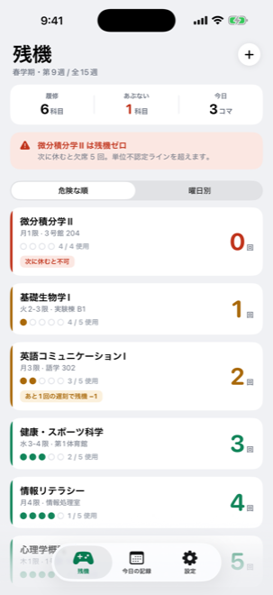
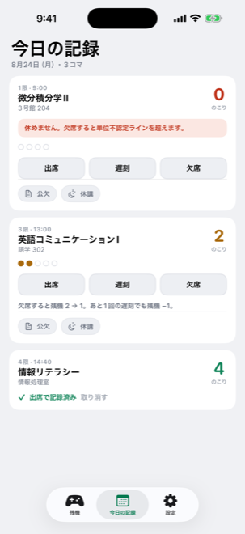
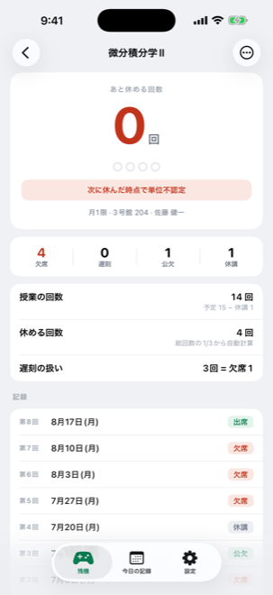
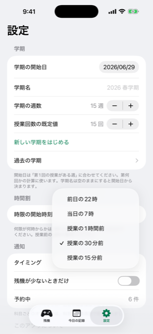
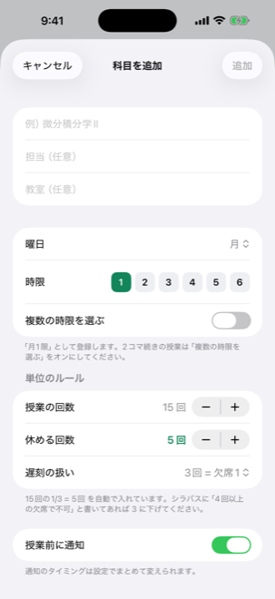
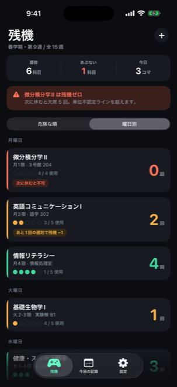

IPHONE アプリ
あと何回休めるか、それだけ。
履修科目ごとに「あと何回休めるか」を数えます。授業のたびに1タップ。残りが少ない科目から順に並びます。
App Store 審査中

シラバスにそう書いてある。ここまでで何回休んだか、正確に言えますか。
思い出せないまま、なんとなく休む。
気づいたら手遅れ。
残機は、その1点だけを数えます。あと何回休めるか。それ以外は何もしません。
実際のアプリの画面です。
← 横にスクロール →
開いた瞬間に分かる残りの回数を大きく表示。危険な順に自動で並ぶので、探さなくていい。

記録は1タップ今日ある授業だけが出ます。「欠席すると残機 2 → 1」と、押す前から結果が見えます。

内訳まで残るいつ休んだかを全回分。後から「あれは公欠だった」と直せます。

授業の前に知らせる前日の夜でも、直前15分前でも。文面は残機の数で変わります。

登録は最短4項目「休める回数」は総回数の3分の1が自動で入ります。2コマ続きの授業もそのまま。

曜日別にも見られる「明日どれがまずいか」を確かめる用。ダークモードにも対応。
日本の大学の運用に合わせてあります。海外製のアプリはここを持っていません。
忌引・実習・大会などで認められた欠席。休んだ記録は残しますが、残機は減りません。ふつうの欠席と一緒に数えてしまうと、実際より焦ることになります。
先生の都合で授業がなくなった回。総回数から引きます。総回数が減れば休める上限も減るので、そこまで自動で計算し直します。
「休講があったぶん余裕ができた」と思っていたら、実は逆だった。よくある勘違いです。
遅刻の繰り上げ
「遅刻3回で欠席1回」のようなルールを科目ごとに設定できます。あと何回遅刻すると残機が減るかも表示します。
授業前の通知
前日の22時／当日の7時／1時間前／30分前／15分前から選べます。残りが少ない科目だけ知らせることもできます。
学期の切り替え
新しい学期をはじめると前の科目はしまわれます。記録は消えないので「去年は何回休んだか」を後から見返せます。
大学に合わせる
何限が何時からかは大学ごとに違うので、1限から6限まで手で設定できます。
時間割は作りません
このアプリがやるのは数えることだけです。曜日と時限は、今日の授業を出すためと通知のためにしか使いません。
なにも集めません。
アカウント登録は不要です。記録はすべて端末の中だけに保存され、外に送られることはありません。広告・解析を含めて、第三者のライブラリを1つも使っていません。